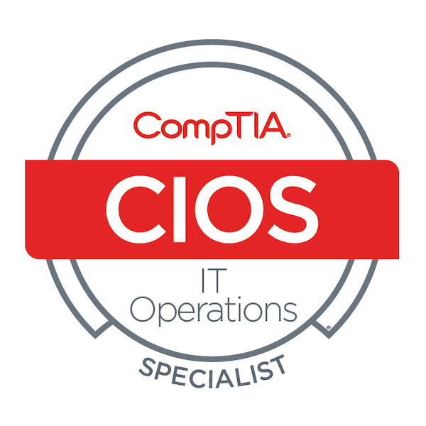
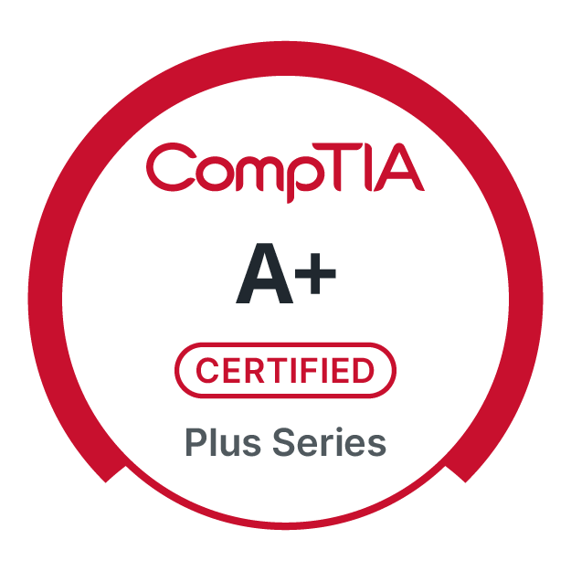
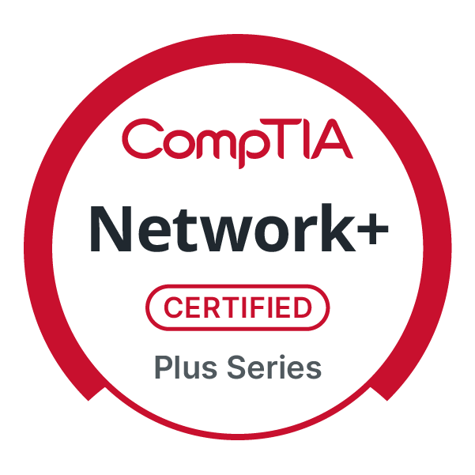
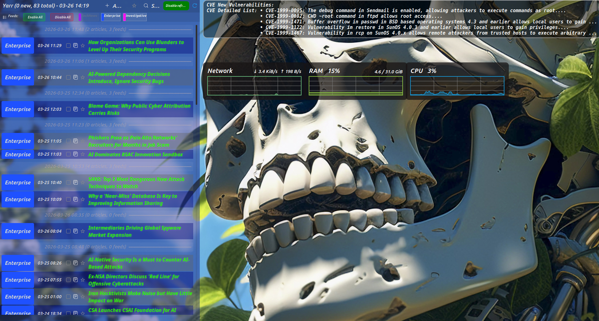

This hands-on experience enhanced my understanding of system-level security, detection methods, and mitigation techniques from both an offensive and defensive perspective. Although still a work in progress, this remains one of my favorite projects to revisit in my free time.
View on GitHubBridging the Gap Between Code and Security
A cybersecurity student's journey into web development, building projects with a security-first approach.
A saferfutureis built in the code
Brycen Long

About Me
I am a cybersecurity student with a passion for coding. My curiosity led me to dive deep into various programming languages and technologies, always with a focus on security. I've soon grown tired of just relying on tools to find vulnerabilities and, as a result, started exploring the code itself. After all, tools are useless if there is nothing built to test against.

Certifications


CompTIA A+ Certification

CompTIA Network+ Certification
My Goals
My goal is to create, maintain, and deconstruct projects to develop safer technologies and methodologies in the future. By bridging my knowledge of cybersecurity and software development, I build robust applications that are secure from the ground up.
Projects
Coding
IT Projects
Showing Coding Projects...
Showing IT Projects...
Coding and Development
Here are a few of the projects I've worked on to satisfy my curiosity and deepen my understanding of coding concepts. While some of these are works in progress, each one represents a unique exploration into new technologies and security methodologies.
Custom Antivirus
A self-developed desktop antivirus program used to analyze and defend against malware, with plans for live demonstrations against custom payloads.
A self-developed desktop antivirus program used to analyze and defend against malware, with plans for live demonstrations against custom payloads.
Handcrafted 3D Game Engine
A personal project to build a 3D game engine from the ground up, focusing on core programming concepts like object-oriented programming (OOP) and game loops. This was also a primary project for me to deepen my understanding and implementation of vector mathematics.
I often turn to this project to de-stress and maintain productivity during demanding times like final exams. It serves as a creative outlet while still reinforcing fundamental development skills.
This is still in progress.
View on GitHub
Weather App
A weather application built with React that displays daily high and low temperatures for the week. The list is dynamic, always reordering to show the current day at the top. This project is a work in progress and serves as a sandbox for me to experiment with APIs and practice security methods, such as input sanitization on fetched data.
I regularly revisit this application to hone my skills and use it as a personal testbed for practicing bug bounties before participating in real-world programs.
View on GitHub
Brycecoin
A project to develop a custom cryptocurrency, cloned from the Peercoin blockchain. This was a deep dive into the inner workings of cryptocurrencies, wallets, networking, and blockchain technologies. Although currently non-functional, it provided a valuable learning experience in managing a large codebase and using professional Git and GitHub workflows.
This project allowed me to explore complex build systems like Autotools and serves as a long-term experiment. I plan to debug the issues and develop a unique feature where a portion of the mining pool is allocated to a charity or scholarship fund.
View on GitHubIT Support & Networking
Hardware deployments, WiFi optimization, and Indy-based support.
Linux Threat and Resource Monitoring Dashboard
RSS Feeds and desklets used to display articles and gather data from NVD and CVE. It's configured to give me live updates on the desktop. The use is to stay updated and save a few minutes of my time by having it all displayed over my wallpaper.

Industry News Feed
As seen above, I have pieced together a Dashboard for my homescreen. I used "Yet Another RSS Reader" created by itoberling to for my IT news feed. The websites used to pull IT news articles from are bleepingcomputer.com, darkreading.com, kerbsonsecurity.com. For displaying CVEs I used "Command result desklet" created by ZimiZones to run curl commands and display CVEs with some including quick descriptions. This needs a little tuning but it is nice to look at in the morning or in some down time.
System Resource Monitor
Using the "System monitor graph" by rcassani was pretty easy as it was just a few clicks and drags before everything was fully configured.
Resources Used
Most of the inspiration and motivation came from "Linux All-In-One for dummies" by Richard Blum. This book helped me a lot with understanding some of the fundementals that came in handy with the project. Google Gemini was also used when trying to form a direction. I had to decide between Premade desklets and Conky, which I had to make a decision. Did I want a deep dive project right now with my classes or a quick working solution. I chose speed over complexity for this because I learned at my first hackathon that I didn't ever really try fast and easy solutions, which can be benifitial in some cases. In discussion I have been told that employers also value when you can pull something simple together quickly that works just fine.
Final Thoughts
The side quest this has taken me on was intreging and it just showcases the type of customization you can do on linux. Although I use Windows at home to stay relevant for IT jobs, Mint Linux is my daily Driver for my laptop, so it's fun to throw in a little personalization for where ever the day takes me.
Enterprise Virtual Network Home Lab
A Github repo including lab sessions of my configurations and testing within a Windows AD and Linux security Stack environment
Enterprise Virtual Network Home Lab
After recently graduating from a Federal Workstudy position at my Community College, I applied and accepted an offer for a Help Desk role within the same organization. When getting accustomed to how accounts were handled, I noticed that I lacked a fundemental and technical understanding of how Active Directory and cloud hybrid network was configured, deployed, and managed. To combat this gap in knowledge I decided to ask other techs about helpful resources to learn AD while I studied the Azure 900 exam material, and built out VM network in my off hours.
View on GithubGoals and Aspirations For This Lab
Mainly, I wanted to build this lab out and manage it so I am not stuck at Help Desk for the rest of my career. However I do believe I became more compitent through this expirence for my customers. I soon realized after graduation that I had a lot of concepts where fading from my memory, and most material I remember was the CompTIA exam information. It was pretty obivious that this would not get me far in my career. With that said I had a few main objectives and advantages I wanted to acheive for this specific lab.
For the first and most obvious objective or reason other than being young and ambitious was to have a general understanding how networks and fleets were planned, developed, deployed, evaluated, maintained, governed, and mangaged. It started becoming hard getting in positions or infront of people who were willing to let me see a live configuration and allow me to gain expirence messing with a production network. Like most things in life I have done, if no one is going to teach me something when I am eager, then I will teach myself.
After shadowing an information security team I realised there was so much for me to learn if I wanted to be affective being on a Security Analyst team. The goal I had was never to get into security and stagnate at logs. I wanted to work up to the point where I can reason risk, policy, and secure architectural management. Building this lab will help me close the gap between general IT and a security team.
TryHackMe was outstanding, but I excelled way more if I see both the Offensive and Defensive side. Also in my expirence with talking with security professionals it was aparent that Red Teaming is usaully a periodic stepping stone or a fun contract to pick up every once in a while. It may not be the same for other professionals, but I rather have stability in my career currently. This lab has shown that seeing the Blue Team and operational aspects of IT and security make me a better attacker and defender, which will ultimately make me a better practitioner.
Although I am treating this as an airgapped production environment for my first Virtual Machine Network lab outside of classes, I wanted expirience with a testing environment and just to have one with odd hypotheticals to test. Anywhere from seeing what both sides of an attack look like, eventually seeing what ATP behavior looks like, and what detonating malware looks like on a network on different layers are all ambitions I wish to achieve in this lab.
My last two goals may seem a bit obvious to a new IT professional, but I want to develop good documentation and change management skils. With all of these goals in mind I can hopefully do a few types of positions off the clock to be capable of working at those levels one day.
Home Lab Server
Homelab server used to mimic Active Directory and monitor a network
Home Lab Server
To put my A+ and Network+ to use while I was waiting to find a job that will work with my college schedule, I decided to take it upon myself to build a network that mimics a companies environment. I repurposed a old gaming rig a friend gave me and it turned out to be a cornerstone to my lab work. It took lots of hours of research and extra learning modules online after the Network+ exam to get this off the ground and I so far have seen slow but steady progress.
Bare Metal Start
After a couple weeks of sitting in my room while I was waiting on money for a hard drive I remembered that I had a spare 1TB SSD PCIE SSD stick laying around. Sense I had that I got to work right away, starting with taking the desktop apart and cleaning it. I was already starting with an older i7 with 32 GB of DDR3 RAM, and a graphics card so I was in good shape sense the beginning. I still haven't found a use for the graphics card yet but I hope to find a task that's reasonable to have this GPU do. Once it was cleaned up and put back together I grabbed a spare Mint Linux boot-able USB and fired it up. The First major issue I ran into was that motherboard was configured with a BIOS lock on it so it couldn't even boot into the USB. I did have a little bit of panic set in which fueled me to ask around on discord along with googling to see if I can find a post with a similar issue. I even asked my friend if he knew the password, which he was unaware of the BOIS lock. To fix this issue I decided to power off, unplug the machine, open it up, and then take my iFixit kit and touch the motherboard pin jumpers with the screw driver within this kit. After I held the screwdriver there for a few seconds I put the case cover back on, plugged it in, and was greeted with a fresh start in the BIOS. If you haven't and ever get the chance you should look at the Asus BIOS, it's the coolest I've seen yet!
OS Installation
I mentioned earlier that I grabbed a spare Mint Linux USB. Yes, this is the operating system I installed for the server. I honestly prefer it with the Cinnamon Desktop because it mimics Windows on the GUI. I find this especially helpful because it makes it easier to remember and do stuff on both operating systems. This has shown me that its helpful because I tried Linux as my only OS, and right away I dealt with compatibility issues for school, I couldn't get some games to work even with proton, and I was already forgetting some of the stuff I learned from classes and the A+ when when it came to supporting Windows clients. The final straw that convivnced me to work in a hybrid between each OS was struggling to answer basic questions in an interview. Just a tip for anyone else starting out in a similar situation, yes you should use both Windows and Linux if you are considering switching your Native OS.
Now moving away from explaining my choice of which OS I was using for the server, I wanted to elaborate on how I put Linux on this drive. My SSD was already formatted so I didn't need to do this step for the project. So my next course of action was while powered off I plugged in my boot-able USB drive to one of the front USB-A slots infront of my computer. After turning on the computer I spammed the "F" key needed to get into the BIOS (When updated I'll specify which F key, I just don't remember which one for Asus). This brought me to the boot options section. From here I used my arrow keys to scroll to the boot-able USB drive section on my screen and I hit enter to confirm that I wanted to boot from this drive. Once In I clicked the downloadable image Icon on my desktop screen in the top left corner. After filling out all the information needed for a fresh install I had to unplug the USB when it was on the booting screen (the green and white LM pinwheel), restart my computer, and log back into the new account created. Immediately I realize after a fail `sudo apt update` and `sudo apt upgrade` I had no connection. You'd think internet would be the first thing I'd check for in this instance but its a force of habit with all the VMs I set up. After checking out Network and Advanced Network settings I discovered there is no WiFi NIC in my computer. I didn't have a USB-WiFi adapter available so I grabbed a spare cat 6 cable and ran it from the server to the back of the Gateway router. From there I was able to update the package list and upgrade.
Synthetic Active Directory
Sense Active Directory is expensive, and I noticed I had some Windows 11 pro licenses lying around on devices at home so I decided to utilize Samba. My first time hearing about it was in a video course from Total Seminars with Mike Meyers explaining active directory on the A+ prep course. Samba can be used to communicate with other devices on the network if you configure all machines utilizing this to do so. My first stab at setting this up was to download samba on the server and set it up as a network drive. From here I was able to create user accounts and folders corelating to the accounts. An important step to note was setting up a static IPv4 configuration in the networking files on Linux. Once you have that saved, the other crucial step is to log into your gateway router's web admin panel and set a DHCP Reservation. This is important because you do not want your server to switch IP addresses after its DHCP lease is up, and then communication with the server gets messed up between devices. Once installed and configured on the server, I moved the other windows devices, created local accounts for two separate users (one for me and one for my girlfriend), and started adding the network drive in file explorer. When doing this, you would use the username and password you set up for your samba accounts to make sure you sign into your correct folder your account is correlated with. By the time I got this done I started working on setting Fail2Ban. This program is designed to allow you to ban IP addresses for any time you set after however many login retries you want. The purpose of this is to have a counter measure to anyone on the network trying to brute force a password to the network drive. Its not the end all be all ideal security measure, but it was an implementation to hopefully keep non technical or the not nerdy people out of the network drive for the time being.
After testing the network drive and making sure it maintains persistance so that way it doesn't need reconfigured after restarting the devices, I started moving torwards scripting. I won't lie, I though I had this in the bag. I figured with all the hours spent in the terminal and text editors was going to make this project fly by fast. Well, like a lot of projects starting out, it wasn't easy. I for the first time on an administration level outside of web development had to make conscious decisions on which programming languages are availible and which ones will get the job done better than others. For this I chose VBS, PowerShell, and python for my script. Python was at the beginning to determine the OS these commands were trying to be ran from autonomously, once that is picked I used VBS and PowerShell to automatically start pulling wallpapers out of the network drive and change the desktop background to the wallpaper. I did this so I could start having more design personalization for me and my girlfriend no matter which of our computers we decided to use. As of March 2026 (the time I am writing this article), I haven't done much else to this part of the server because I wanted to set up other network security measures.
SOC Environment
Now usually at home when I'm not working on any IT projects and try to relax sometimes I'll play call of duty. In between matches to avoid doom scrolling at that time, I'll start scanning my network with Wireshark. I like to see what my devices are doing and familiarize myself with what normal looks like in my network. Also, I try to further solidify what I learned in previous classes with small little projects and tasks outside of class. I started noticing after my CyberOps class that I still was a bit behind on decent understanding for the SOC environment so I decided "why not make my own production environment to monitor as if I were doing it for an actual company?". From there I done some research. I remembered Wazuh, which I failed to fully implement a few times in the past. I already knew this was free, and I had some more stronger practice on fundamental prerequisites needed for setting this up, so I tried this again. With the help of people answering questions on discord, reading articles online, and asking Google Gemini to help further explain pieces of the process I started configuring away. Within a day or two I successfully installed and configured the Wazuh manager, set up agents on my devices, and was able to log into my dashboard and view alerts between my matches. Sure, it was cool to read my device logs, but what about network logs? Wouldn't it be nice to have an IDS for my network? Well for that after some asking around, reading, and watching zoom cloud recordings from my CyberOps class I decided Suricata was perfect for this. It was Free, and did exactly what I needed. It was a pain doing the configurations for the first time because I didn't realize logs were delayed on the Wazuh dashboard at the time, and I would put in fake malicious traffic on the end devices, and it wouldn't show up till I already reconfigured a couple times. It was a little frustrating exiting out of nano just to see your expected results on a time stamp that happened when you weren't looking. Once it was set up however it definitely did work. I noticed this by seeing all my devices traffic alerts after partaking in the PicoCTF.
After a couple days go by while I'm on spring break, I realized the need for a ticketing system to pair with this SOC environment. I started on the TryHackMe SOC1 path sense I still had a premium subscription from my Ethical Hacking class last, and I noticed that I don't have a way to triage alerts so I started asking Google Gemini for a list of the best free ticketing systems I should consider implementing to this security stack. What seemed to be the best solution for a first try was TheHive. The dashboard was also browser based, so it was perfect to view on whatever machine I lock it down to in the house. After installation on the server all I had to really do was edit the programs configuration files to allow communication from Wazuh to TheHive, and I had to make accounts with roles and assign an organization for Wazuh. Once configured I was able to finally Assign Tickets to myself, take notes, escalate, and determine if the alert was a false-positive or a true-positive.
Remote Management
Originally I was excited to finally get up and jump between different computers in different rooms, but as expected I grew tired of that real quick. It became annoying when I was playing cod and I just wanted to update or install something on the server, or check a configuration if I thought something looked weird from the dashboard in between matches. The solution to this problem was SSH. I did enable it and log in a few times to test this, I realized anyone could just hop onto the server if they managed to get into the network, so I immediately set this to keys only. accompanied by this decision I also configured the machine that is allowed to get into this server to use a PowerShell Alias and script to use my key upon attempting to log into the server. Next I also locked down ufw (uncomplicated firewall). The firewall configuration goes beyond just ssh, but it was set up for ssh to only allow traffic from the intended devices IP address. This worked perfectly, until the DHCP reservation ran out but that's another fix that came when I started working on another part of the network.
Solving Web Admin Lockout
To set the DHCP Reservation I had to get back into my gateway router's web admin portal. The problem was that when I made a DHCP reservation for the server previously, I forgot the username and password I had for it, I didn't want default credentials on there because its safe to say its one of the first active reconnaissance techniques an attacker might try. The draw back is I just didn't store these updated credentials or have it memorized, so I tried to hard reset the router a few times, it kept the old credentials every time, so Xfinity sent me a new edge router. It was doing the same thing, but despite the amount of caffeine ingested and trying to keep my eyes open, I tried one simple thing after some more googling and failed attempts. Before resetting it, if I unscrew the coaxial cable and hold the button down for 30 seconds, then while its resetting I screw the cable back in, it will return default credentials for your gateway's web admin panel. This worked perfectly and was able to finally set a DHCP reservation for the device used to ssh into my server.
Prodviding internet to a Cisco Catalyst {Place Model here} Switch Wirelessly
Flashing firmware on an old router to configure it as a wireless
bridge adapter. Plugging this in to the switch provides internet access for ports
and VLANS.
Why am I doing this project?
I just earned my Network+ not long at the time of doing this project and I wanted to put it to use. I also wanted to get a head start on the CCNA or the CySA before I needed to study for it. After some further research on certs, it may be best to take the Linux+ first before heading off to the higher certs I previously stated because realistically what I have so far is only good for 3 years, and thats how long I will probably stay at an IT Support role after graduation. So far from what I heard and what I have expirenced when applying is it can take months to get into a job. There are multiple jobs to apply for, multiple rounds of interviews, its just a lot that spans out over time. Waiting on the CNNA or the CySA might be benifitial for my because I wouldn't be in the expensive cert renewal before even getting into a job that requires these.
The few that do know me however can tell you that I just won't sit on my hands until then. That's where this project becomes practical. Not only am I trying to prepare for in-depth higher certs now, but I also needed VLAN management for furture lab plans. My Bedroom PC had to use a usb WiFi adapter to get internet on the device, and I had an enterprise switch laying around so I figured, "why not put this to good use?" Also I have had the annoying issue of when I do a fresh install of windows or linux I need to download the driver for this adapter over the internet to get it to work. Naturally I had to take a 25ft cat 6 cable and run it accross my living space to connect it to the gateway router for a temporary connection until everything was installed. This of course never made my girlfriend happy, breaking long chords out makes her worry they'll be strung out all over the appartment floor, so it solved both of our problems.
Now if you've read this far you're probably wondering, "But wait, switches are gernerally layer 2 devices. How are you going to supply wireless internet access to the switch?" Well I did, sort of in a way. That's where the interesting part of this project comes into the foreground.
The Spare WiFi Routers
I had an old couple of WiFi routers on my hardware shelf in my room that could be perfect for this but I soon realized with a couple hours of research and asking Google Gemini to further break down some of my finidngs that some features just were not supported by the vendors firmware. Now I have tried writing sockets before on a web server, I have messed with crow for C++ backends, and I have also played around with Node.js and Express.js but to my current knowledge, this isn't enough to force a router to do what it wasn't originally intended to do. Sense this is the case, I learned about firmware injection, and how flashing the right firmware for my router model could boot off the vendors original firmware and replace it with a better version. For this area of the project that I was stepping into I decided to use DD-WRT for the replacement firmware.
Finding DD-WRT Firmware Replacement
Once I skimed around the internet enough I settled on DD-WRT for the router firmware. I had two of the same routers just different models, so I tried on the newest one for my first attempt. I skimmed the database and tried to compare hashes and could not find the expected matching hash. I even ran into the hash pointing to a different router model a few times from the downloaded firmware I was testing. After asking around on discord I realized some deal was signed around that year the router came out to attempt to block changing the firmware. Sense it was my first time so my response was to pivot to the older router so I could see if I would have better luck. I saved a lot of time chasing my tale because firmware database on DD-WRT's website had the correct firmware with the right hashes. Once downloaded and confirmed I can move onto getting my tools ready.
Tools Used
The tools I used was the TFTP Client on DD-WRT's website (this was done on windows). You would also need an ethernet cable to plug into the PC (you may even get away with an ethernet-usb adapter if you're on a laptop from what I read), command prompt, and a pen or something long and thin enough to reach the router reset button.
Firmware Injection
First before i do anything I should reset the router to factory default sense it was a router from Goodwill. To achieve this if you plug in the router, grab your long thin object (e.g a pen) and hold down the reset button for 30 seconds and let the router fully boot then it should wipe to factory settings. Other routers might have a longer time for this but that was the time window for mine. Next I had to turn on the router, plug in the ethernet cable from my desktop to the router, than pull up the TFTP client that was downloaded earlier. It is important to note that the ethernet cable going to the router must NOT be pluged into the internet port, instead it should be plugged into one of the other numbered ethernet ports on the router. Once that is set up, make sure you know your routers IP address, you can do this by using "net view" in your terminal or you can look at this in your network settings. If you go to Settings > Network & Internet > Ethernet. From there if you click on properties and look for IPv4 default gateway you can find the routers IP addess there. Next I opened up the TFTP client from earlier. I typed the routers IPv4 address into the "Server: " input field. The password feild was left blank, and in the "File: " field I clicked the three dots next to it. this opened up the file explorer so I could click the firmware file I downloaded earlier from the database. It is benificial to bump the "When upgrade fails, the program will retry [x] times." option up to 15-20 so you have a longer window to plug in, the router and start the injection process. Next I opened up a command prompt window to continually ping the router. This was a crucial step in this process, because it was my eyes and ears to pull off this flash and injection. I kept getting 60 at the end of every reply which tells me the router is on while it was pinging.
Now I had to unplug the power cable on the router till it powered off, then click upgrade. As soon as I clicked upgrade it was a race to plug the power back into the router, grab my pen, and start spaming the router's reset button. I had to repeat this proccess over and over with trial and error. Whether it was I wasn't clicking the reset soon enough, fast enough, or if it flat out didn't inject at the right time, it was a hard stop that forced a restart of the process. When the command prompt quit throwing "Request timed out" and started returning 60s then I knew it sucessfully booted into the normal firmware as well which forced me to start over a few times. While spamming the reset button, and watching the ping feedback, I was looking for a very specific 100 reply. When I would sucessfully get this I just had to hope and pray the TFTP client could pass the DD-WRT firmware to the router intime before booting into the router's native firmware. Once I got 64s back over and over I knew that the injection was successfull and I just had to leave the router untouched for 15-20 minutes to be safe. After getting up and taking a break, I returned to turn off the router and turned it back on to get the new firmware to boot up. Once I got to this last step it still booted into cisco which after researching meant that it wasn't fully burnt into the routers permanent memory,and I just repeated the process. After the second successful completion I was able to get to the DD-WRT admin browser dashboard.
New router configurations
Now that we have new firmware that allows extended features I need to make configuration changes. It was still in AP mode and I had to move it to Bridge-client mode. I also changed the SSID to the same as the gateway router and turned off WPS. Out of habbit I made sure to change the admin default credentials as well. After setting the encryption standard to the highest one I made sure to save the configurations.
Providing Internet To The Switch
All I had to do from here was remove the side of the ethernet cable connected to the desktop and move it to the switch. Once plugged into the switch I was able to remove my USB WiFi adapter and run a cat 6 ethernet cable from my desktop to my switch. Everything pinged, my, the router and switch showed up when running ``arp -a``, and I was able to navigate to youtube seamlessly. As a bonus, the switch being on even gives a hum to keep me focused and makes it easier to fall asleep at night with the hum and fan sounds.
Locking down the switch
I have plans to further describe security measures I implemented like wiping past configurations, setting a username and password, port access, VLAN management, ssh lockdown, and creating banners but I made so many changes so far that I want to push what I've done before I continue. If you have read this far then thank you! In between classes, two jobs, updating resumes, research and other projects I am currently juggling I will try my best to fit updating this article soon. In the next months from when I am writing this I will be taking the CompTIA Security+ as well, so this article could be delayed till after that as well.
Get in Touch
- Email: brycen.long.dev@gmail.com
- LinkedIn: http://linkedin.com/in/brycen-long-1719182bb
- GitHub: BrycenSLong